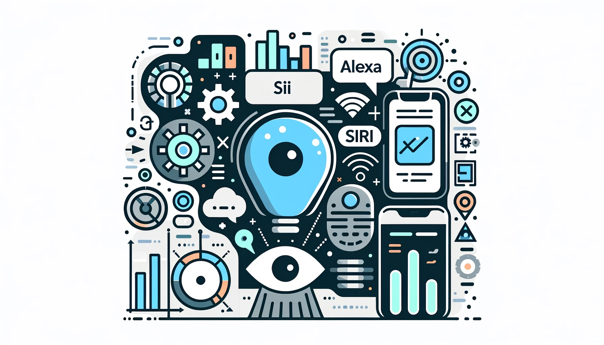
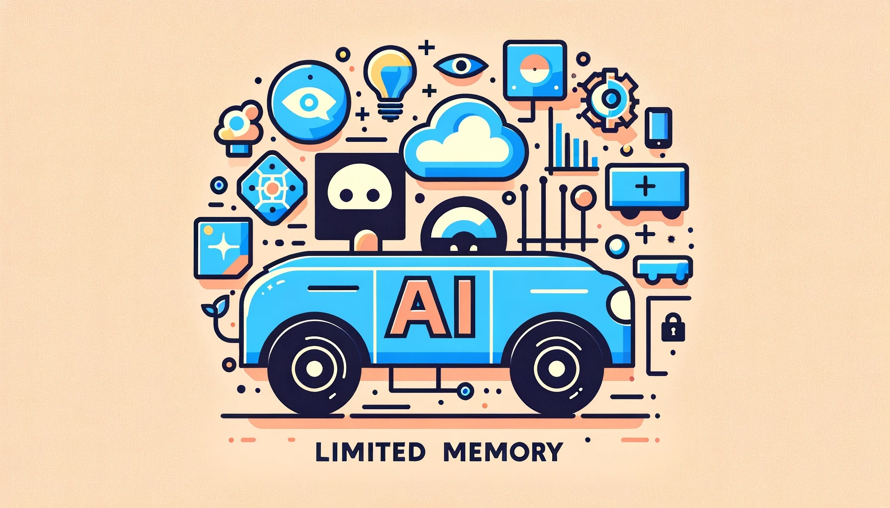
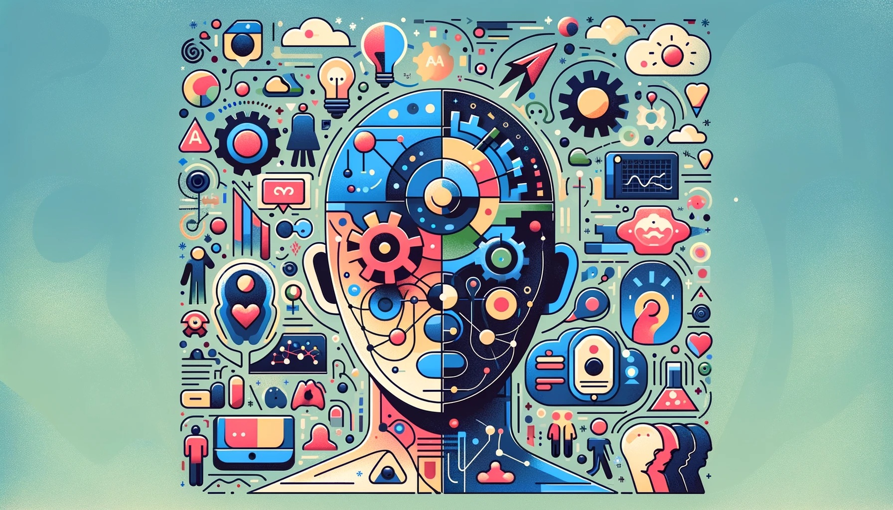

인공지능의 유형들#
인공지능의 다양성과 중요성#
AI 기본 개념 재고찰#

AI는 전통적 컴퓨팅 방식과 구별되는 현대 기술
AI는 문제 해결, 결정 구조, 학습 능력을 포함
기계학습과 딥러닝이 AI의 핵심 구성 요소
AI는 다양한 산업에 혁신을 가져왔음
AI는 지속적으로 발전하고 있음
AI 유형 이해의 중요성#

AI 유형을 구분하는 것은 그 능력과 한계를 이해하는 데 중요
다양한 유형은 다른 응용 분야와 가능성을 가지고 있음
이 분류는 AI의 미래 발전을 예측하는 데 도움을 줌
실용적 적용과 연구 방향에 영향을 미침
핵심 특징과 차이점#

각 유형은 독특한 특징과 한계를 가짐
이러한 차이점이 실용적 응용에 어떻게 영향을 미치는지 알아야 함
AI 발전 전망#
{kind=link}
AI는 미래에 어떻게 발전할 수 있는지 탐색
현재 연구의 상태와 미래의 기술적 도전 과제를 논의
인공지능의 능력에 따른 분류#
인공 좁은 지능 (Artificial Narrow AI)#
{kind=link}
특정 작업에 특화: Siri, Amazon Alexa 등과 같이 특정 작업 수행에 최적화된 AI
한정된 적용 범위: 효율적이지만 한정된 작업에만 적용 가능
현대 AI 응용 프로그램의 대다수: 대부분의 AI 응용 프로그램이 이 유형에 속함
높은 정확도와 속도: 우수한 성능을 보이지만 유연성은 부족
다양한 분야에서 활용: 의료, 금융, 고객 서비스 등 다양한 영역에서 사용
인공 일반 지능 (Artificial General Intelligence, AGI)#
{kind=link}
이론적 개념: 인간과 유사한 다양한 작업 수행 가능한 AI, 아직 실현되지 않음
자율적 학습과 문제 해결 능력: 인간 지능 모방, 다양한 상황에 적응 가능
인공지능 연구의 궁극적 목표: AGI 실현은 AI 연구의 중요한 목표 중 하나
기술적 한계와 도전: 현재 기술로는 실현이 어려움
인공 초지능 (Artificial Superintelligence)#
{kind=link}
인간 지능을 뛰어넘는 이론적 AI: 자아인식, 창의성, 사회적 능력 등을 포함할 수 있음
극적인 변화와 윤리적 고려사항: 인류의 미래에 큰 변화를 가져올 수 있음
완전히 추측적인 영역: 현재로서는 상상할 수 있는 최상위 단계의 AI
현재 연구와 한계#
{kind=link}
기술적 도전 과제: AGI와 ASI 개발에 있어서의 데이터 처리, 알고리즘 개발, 하드웨어 한계
국제적 협력과 투자 필요: 발전을 위한 국제적인 협력과 자금 투자의 중요성
윤리적, 사회적 문제에 대한 지속적인 논의: 발전에 따른 윤리적, 사회적 영향 평가 필요
윤리적 고려사항#
{kind=link}
고도로 발전된 AI의 윤리적 책임: 프라이버시, 안전성, 공정성 등에 대한 책임
법적, 도덕적 통제 필요성: AI의 자율성과 결정에 대한 적절한 통제 및 규제 필요
기술 오용 방지: AI 기술의 오용 방지 및 윤리적 사용 촉진 필요
기능에 따른 인공지능 분류#
반응형 기계 (Reactive Machines)#

현재 데이터 사용: IBM Deep Blue와 같이 현재 데이터에만 기반한 AI
과거 경험 무시: 과거의 경험을 기억하거나 활용하지 않음
단순 작업 효율성: 단순한 작업 수행에 효율적
적응성 부족: 환경 변화에 적응하지 못함
주요 사용 분야: 예측 및 패턴 인식
제한된 기억력을 가진 AI (Limited Memory AI)#
{kind=link}
단기적 결정 지원: ChatGPT, 자율 주행 차량 등 과거 데이터를 기반으로 결정 내림
진화하는 데이터 학습: 지속적으로 변화하는 데이터에 대응하여 학습
복잡한 작업 수행 가능: 더 복잡한 작업에 적용 가능
데이터 변화 이해: 시간 경과에 따른 데이터 변화 파악
마음이론 AI (Theory of Mind AI)#
{kind=link}
인간 감정 이해: 인간의 감정과 생각을 이해하는 이론적 AI
상호작용 개선 가능성: 인간과의 상호작용 개선에 사용될 수 있음
사회적 상호작용 및 감정 인식: 사회적 상호작용과 감정 인식에 중점을 둠
인간-AI 관계 혁신: 인간과 AI 관계에 새로운 혁신을 가져올 수 있음
자아인식 AI (Self-Aware AI)#
{kind=link}
자기 인식 능력: 자신의 내부 상태와 감정을 인식할 수 있는 이론적 AI
진보된 AI 형태: 현재 AI 연구에서 가장 진보된 형태로 여겨짐
사회적, 윤리적 도전: 미래의 사회적, 윤리적 문제 발생 가능성
인간 역할 재정의: 인간의 역할과 관계를 새롭게 재정의할 가능성
미래의 연구 및 전망#

미래 발전 가능성 탐구: 기능적 AI의 미래 발전 가능성에 대한 탐구
기술적 한계와 도전: 현재 연구가 직면한 기술적 한계와 도전 과제
능력 확장 연구: AI 능력의 큰 확장을 위한 연구 중요성
인간-AI 상호작용 개선: 인간과 AI 간의 상호작용을 개선하는 데 중요한 역할
사회적 영향력: 새로운 기능적 AI 개발이 사회 전반에 미칠 영향
인공지능 기술의 실용적 응용 분야#
컴퓨터 비전#

응용 분야: 이미지 인식, 객체 추적 등에 활용
실시간 데이터 처리: 데이터 분석을 통한 실시간 응용
다양한 적용: 의료, 보안, 엔터테인먼트 분야에서 사용
능력: 고급 패턴 인식과 분류 능력 보유
지속적 발전: 기술의 지속적인 발전과 혁신
로봇공학#
{kind=link}
적용 분야: 산업용 로봇, 의료 보조 로봇 등에 적용
자율성과 효율성: AI를 통한 로봇의 자율성 및 효율성 강화
일상 생활 적용: 스마트 홈 기기 등 일상생활에서의 활용
작업 수행 능력: 다양한 환경에서의 효율적 작업 수행
노동 보조 및 향상: 인간 노동의 보조 및 효율성 향상
전문가 시스템#

응용 분야: 데이터 분석 및 의사결정 지원
지식 모방: 인간 전문가의 지식을 모방하여 문제 해결
핵심 역할: 비즈니스, 금융, 의료 분야에서 중요한 역할 수행
효율적 분석: 복잡한 패턴과 경향의 효율적 분석
지식 기반 결정: 지식 기반의 의사결정 가능
산업에 미치는 영향#

산업 혁신: 다양한 산업에 AI를 통한 혁신 및 변화
생산성 및 효율성 향상: 생산성과 효율성의 증대
직업 및 기회 창출: 새로운 직업과 기회의 창출
소비자 경험 개선: 소비자 경험 및 서비스의 질적 향상
경제적 가치 증대: AI의 발전이 경제적 가치를 높일 잠재력
인공지능과 문제 해결#
인간과 인공지능의 문제 해결 비교#

인공지능과 인간의 해결 방식 차이점:
인공지능: 알고리즘과 데이터 분석을 통한 패턴 인식, 예측, 분류.
인간: 경험과 직관을 바탕으로 비선형적 사고와 창의적 해결책 도출.
인공지능의 데이터 기반 접근법:
대규모 데이터 분석을 통한 패턴 인식 및 예측 모델 구축.
머신러닝, 딥러닝 등 첨단 기술의 활용.
인간의 직관과 경험:
경험과 감정을 바탕으로 한 복잡한 문제 이해 및 해결.
창의력을 활용한 비선형적 사고와 통찰력 발휘.
데이터의 객관성과 주관성:
인공지능: 객관적 데이터(수치, 텍스트) 처리에 초점.
인간: 감정, 가치관, 선호도 등 주관적 요소 고려.
문제 해결 방식의 상호보완성:
인공지능: 대규모 데이터 처리 및 정확한 예측에 강점.
인간: 복잡하고 추상적인 문제의 이해 및 해결에 능숙.
AI 시대의 문제 해결 중요성#

인공지능의 역할 증가:
복잡한 문제 해결에서 AI의 중요성과 기여도 증대.
대규모 데이터 처리, 복잡한 패턴 인식, 정확한 예측 제공.
기술 발전의 영향:
자연어 처리, 컴퓨터 비전, 강화 학습 등 새로운 기술의 발전.
문제 해결 방식의 변화와 혁신 촉진.
긍정적인 사회적 영향:
다양한 분야(건강, 금융, 교육)에서 AI의 긍정적 기여.
복잡한 문제 해결, 효율성 향상, 새로운 기회 창출.
AI 문제 해결을 위한 특정 사고방식의 필요성#

논리적 사고의 필요성:
알고리즘 이해, 데이터 분석, 모델링을 위한 논리적 사고 필요.
복잡한 문제 해결을 위한 체계적 접근 방법 중요.
AI의 한계 이해:
성능, 신뢰성, 편향성 등 인공지능의 한계 인식 필요.
개발자와 사용자의 정확한 AI 이해 및 적용 중요.
알고리즘과 모델의 중요성:
적절한 알고리즘과 모델 선택의 중요성 강조.
문제 특성, 데이터, 성능 요구사항에 따른 선택 필요.
오류 인식과 대처:
인공지능 결정 과정의 오류 인식 및 대응 필요.
예측 오류, 데이터 오류, 알고리즘 오류 등에 대한 대처 방안 마련.
AI 문제 해결 기법#
{kind=link}
다양한 기법의 개요:
지도 학습, 비지도 학습, 강화 학습 등 AI 기법의 기본 원리 이해.
각 기법의 특징과 적용 분야 파악.
기법별 특징과 적용:
데이터 마이닝, 기계 학습, 신경망의 적용 예와 특징.
문제 해결을 위한 기법의 적절한 선택 및 적용.
성공적인 사례 분석:
의료 진단, 주식 시장 예측, 자동 운전 등 실제 AI 적용 사례.
AI 기법의 효과와 성공 요인 분석.
AI 기술의 한계와 적용:
각 기술의 한계와 적용 시 고려사항 이해.
데이터 품질, 모델 복잡성, 계산 리소스 고려.
문제 해결에서의 AI의 미래#
{kind=link}
미래 기술의 추세 예측:
자연어 생성, 강화 학습, 전이 학습 등 미래 AI 기술의 발전 방향.
기술 변화에 따른 새로운 기회 및 도전 이해.
기술 발전에 따른 도전과 기회:
사회적, 산업적 변화와 AI 기술 발전의 상호 작용.
새로운 기술 도입에 따른 장단점 평가.
윤리적 고려사항과 사회적 영향:
AI 기술의 윤리적 사용 및 사회적 영향 평가.
편향성, 개인정보 보호, 책임성 등의 윤리적 이슈 고려.
인간과 AI의 공존 전략:
인간 중심 AI, AI 교육, 법적 규제 등 공존을 위한 전략 모색.
미래 사회에서 인간과 AI의 상호 발전 방안 탐색.
요약#

인공지능의 다양한 유형과 중요성
인공지능의 기본 개념 재고찰
능력과 기능성에 따른 AI의 다양한 유형 소개
각 유형의 핵심적인 특징과 차이점 설명
현재와 미래에 걸친 AI 유형의 발전 전망
인공지능의 능력에 따른 분류
인공 좁은 지능 (Artificial Narrow AI)
인공 일반 지능 (Artificial General Intelligence, AGI)
인공 초지능 (Artificial Superintelligence)
인공지능의 기능적 분류
반응형 기계 (Reactive Machines)
제한된 기억력을 가진 AI (Limited Memory AI)
마음이론 AI (Theory of Mind AI)
자아인식 AI (Self-Aware AI)
AI의 실용적 응용 분야
컴퓨터 비전: 이미지 인식, 객체 추적의 현황과 전망
로봇공학: 산업용 로봇, 의료 보조 로봇의 발전
전문가 시스템: 데이터 분석, 의사 결정 지원 시스템의 중요성
인공지능과 문제 해결
인간과 인공지능의 문제 해결 비교
AI 시대의 문제 해결 중요성
AI 문제 해결을 위한 특정 사고방식의 필요성
AI 문제 해결 기법 소개
문제 해결에서의 AI의 미래